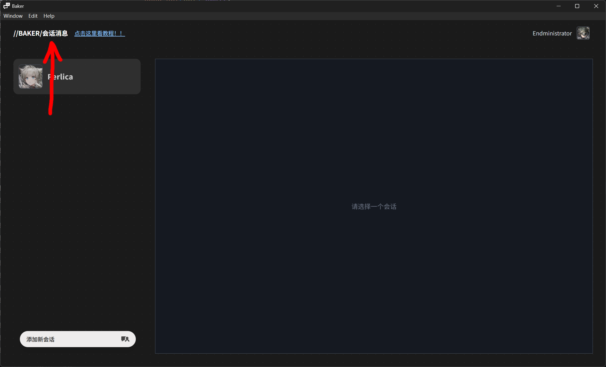
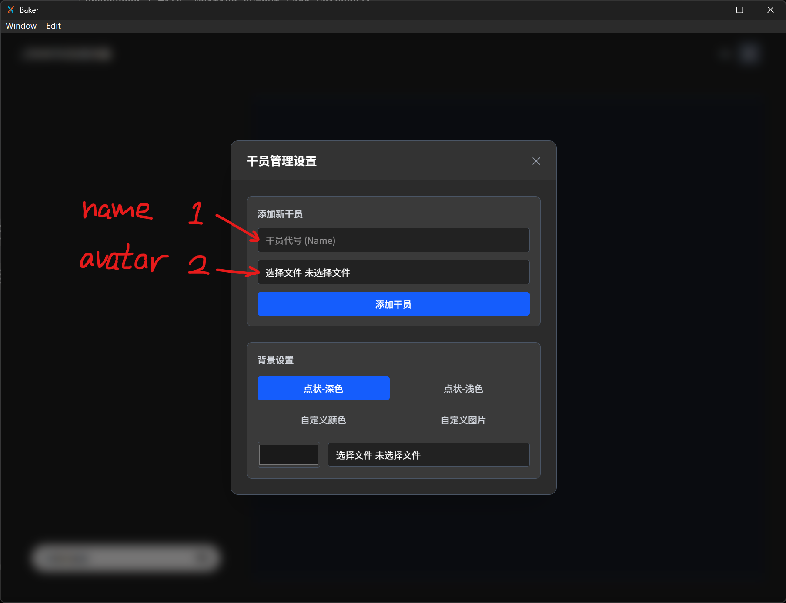
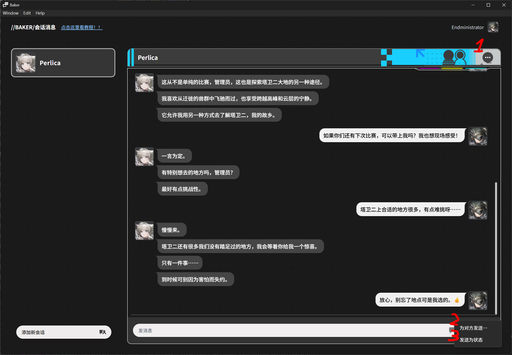
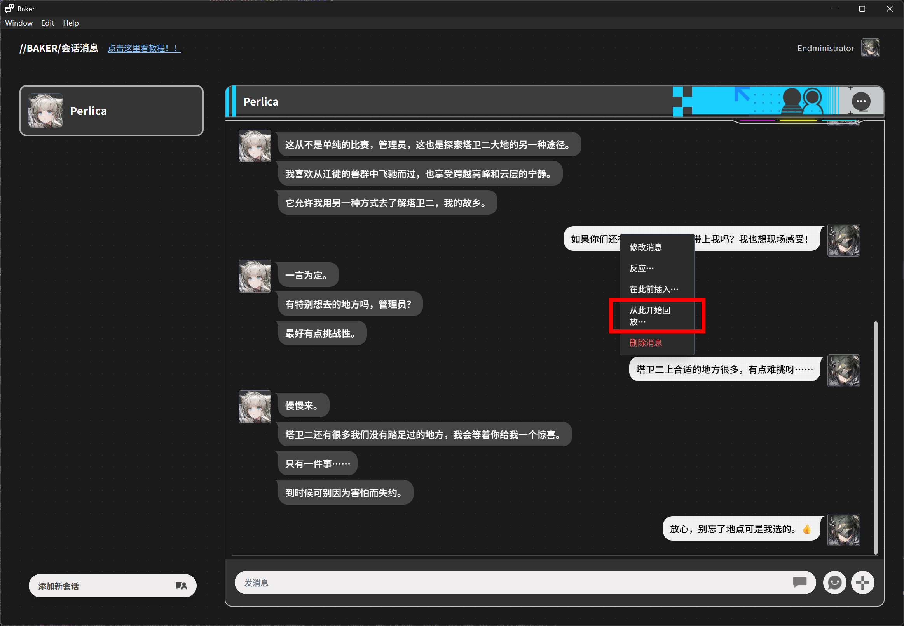
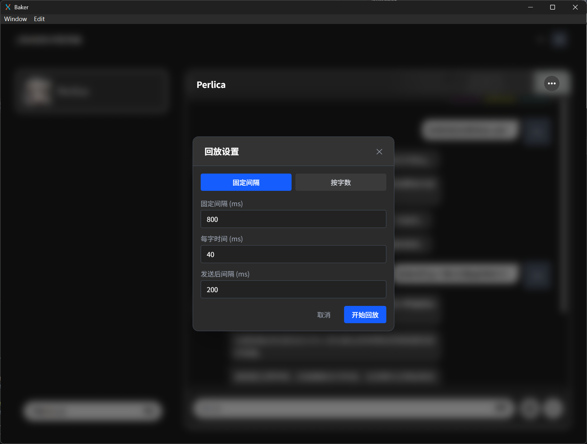

左键双击左上角的 //BAKER/好友沟通，打开设置界面。
第一个输入框是干员名称，第二个是干员头像。
幸好应用目录 avatar/ 下有 Perlica 的头像，我们可以直接用这个。
两个空填完之后点击添加干员即可，然后关闭设置界面。

先点击左下角添加新会话，单选 Perlica 创建新会话。
点击 Perlica 的名片就可以切换到她的会话了。
 
现在我们写好一段对话了。
右键一个消息，即可开始回放。
回放间隔计算有两种模式：
那么两条消息发送的间隔就为：发送后间隔（第三个） + 输入间隔（就是那个输入动画的间隔）（前两个）
推荐设置为： 固定间隔 400ms + 发送后间隔 1000ms，这样子可能大差不差。 点击开始回放就好了。
（回放完之后发送消息（或者历史消息）看不到？切换其他的会话再回来就行了。）
如果你觉得这个软件有用，不妨分享一下？！